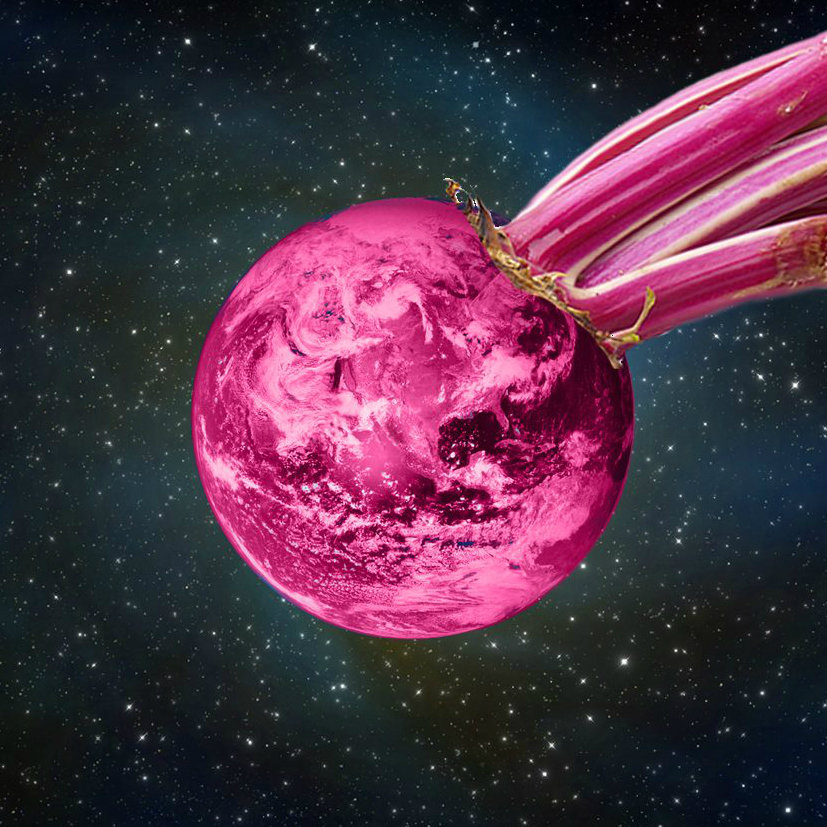

Whirled Beets
With this album I'm creating a series of songs that samples various countries' music. After taking World music classes, I've listened to songs that I can use to sample for these instrumentals. After sampling an instrument from a given country, I then add my own elements to the song to put a personal touch on it.
Each song represents a different country's music and instrumentation.
It's an ongoing album, so it's continually a work in progress!